SeKV：面向长上下文推理的分辨率自适应 KV Cache 与层级语义记忆
[toc]
SeKV: Resolution-Adaptive KV Cache with Hierarchical Semantic Memory for Long-Context LLM Inference 是 Amirhossein Abaskohi、Giuseppe Carenini、Peter West 和 Yuhang He 在 2026-06-30 公开的长上下文推理论文，一作主机构是 University of British Columbia，论文还注明部分工作在 Microsoft Research Vancouver Lab 实习期间完成。本文唯一论文入口是 arXiv:2606.31145。代码状态方面，arXiv 页面提示有 GitHub 入口，但本轮没有解析到可独立访问和核验的仓库，因此代码可用性暂记为“入口存在但仓库未核验”。
这篇论文关心的不是把模型上下文窗口继续拉长，而是当 128K 级上下文已经进入推理服务后，KV cache 如何在显存预算很紧的情况下继续保留可恢复的证据。SeKV 的核心思路是把长上下文组织成可变分辨率的语义记忆：GPU 上保留轻量 routing summary 和 anchor token，CPU 上保留低秩 SVD basis，解码时只对当前 query 相关的 span 进行 token 级重建。
长上下文 LLM 的 KV cache 会随序列长度线性增长，并且在整个解码过程中持续驻留；现有 token eviction 会永久丢弃信息，静态 semantic grouping 又在预填充阶段固定压缩决策，一旦某个压缩 span 在后续生成中变得关键，就无法恢复其中的 token 级细节。
1. 背景和问题
长上下文推理的显性目标通常写成“模型能接受多少 token”，但部署时真正卡住的是另一件事：每一层、每一个 attention head 都要为上下文中的 token 保存 key 和 value，且这些 KV 状态在 autoregressive decoding 中要不断被复用。上下文越长，KV cache 的显存就越像一个随 token 数线性膨胀的长期负债。论文用 128K context 作为主要压力点，指出 full KV caching 在这种设置下很快会变成昂贵的 GPU memory bottleneck。对 agent planning、多文档分析、长对话和检索增强生成来说，这个瓶颈不只是成本问题，还会改变系统能否保留远处证据的能力。
已有 KV cache 压缩路线大致有两类。第一类是 token-level retention 或 eviction，比如根据 attention sink、heavy hitter、prefill attention 或 layer-wise allocation 决定保留哪些 token。它们的优点是直接减少 GPU 上的 token 数，但缺点也很硬：被丢掉的 token 后面无法再恢复。第二类开始引入 semantic grouping，例如 contiguous chunk、sentence-level vector 或 key-similarity cluster，让压缩单位更接近语义片段。这比逐 token 丢弃更稳，但很多决策仍在 prefill 时完成，后续 query 改变时，只能用固定压缩表示回答，不能动态把压缩 span 放大回 token 级表示。SeKV 认为这两个问题的共同根源是缓存只有一种固定分辨率，缺少“先粗看、再按需放大”的机制。
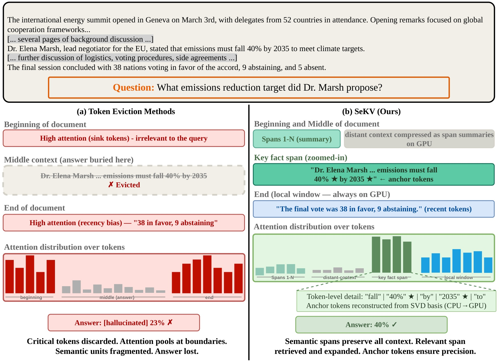
Figure 1 用一个远距离事实检索例子说明论文真正想解决的失效模式。左侧 token eviction 方法因为 sink token 和 recency bias，把 attention 集中在开头和结尾，真正包含答案的中间片段反而被丢掉或权重接近零；模型最后给出错误答案，不是因为上下文窗口没有覆盖答案，而是因为 KV cache 管理把关键 token 变成不可恢复状态。右侧 SeKV 把同样的上下文切成 semantic spans，GPU 上只保留 span summary 和 anchor tokens，等 query 指向中间事实时再从 CPU 取回 SVD basis 重建 token 级细节。这个图的重点不是“语义分块更优雅”，而是提出一个更严格的 cache 目标：在显存受限时，远处证据可以先以低分辨率存在，但不能被不可逆删除。
这个设定对推荐和大模型系统都很有迁移意义。推荐系统中的用户长期兴趣、跨会话行为、商品文档和多轮交互日志也经常呈现“当下看似外围、后面突然成为关键条件”的模式；大模型中的 RAG、agent memory 和 long-horizon tool use 也一样。若缓存策略只根据 prefill 时的静态重要性决定保留内容，就容易在后续推理阶段遇到证据断层。SeKV 把问题重新表述为 resolution-adaptive memory：缓存管理不应只问“保留还是丢弃”，还要问“现在用 coarse summary 是否足够，什么时候需要恢复 token-level detail”。这就是它区别于普通 KV pruning 的地方。更进一步说，它把 cache policy 从一次性压缩决策改成解码期的持续控制问题，这使得后续 query 的语义可以反过来决定缓存分辨率。
2. 方法
2.1 Entropy-Guided Span Segmentation：用 surprisal 切出语义 span
SeKV 的第一步发生在 prefilling。它不把整个上下文当作均匀 token 序列，而是用 frozen LLM 已经计算出的 token surprisal 找语义边界。这个选择让 segmentation 既贴近模型自身的不确定性，又避免额外训练一个独立 segmenter；论文使用的核心信号是公式 (1)：
符号解释：$x_t$ 是位置 $t$ 的 token，$x_{<t}$ 是它之前的上下文，$p(x_t \mid x_{<t})$ 是 frozen LLM 在 prefill forward pass 中给出的条件概率，$H_t$ 就是该 token 的 surprisal。直觉上，主题切换、实体引入、逻辑转折处的 token 更难预测，因此 $H_t$ 往往更高。SeKV 用 $H_t > \mu + \alpha\sigma$ 作为 span boundary，其中 $\mu$ 和 $\sigma$ 是上下文内 surprisal 的均值和标准差，$\alpha$ 控制边界敏感度。这样做的好处是几乎不增加额外计算，因为 surprisal 已经来自模型前向过程。
span segmentation 之后，SeKV 会把高 surprisal 的 boundary token 作为 anchor token 以 full resolution 放在 GPU 上。这个设计很关键：anchor token 不是随便保留几个“特殊 token”，而是保留语义转换点和信息密度高的位置，用于后续 routing 和精确重建。SeKV 的第一层分辨率控制发生在这里：上下文被切成语义 span，span 内大部分 token 可以低秩压缩，但边界和 anchor 保持高精度可见。如果 segmentation 过碎，压缩效率下降；如果过粗，后续 zoom-in 粒度变差。这也是论文在超参数表里专门考察 $\alpha$ 的原因。
2.2 Dual-Resolution Span Representation：GPU summary 与 CPU SVD basis
对每个 semantic span，SeKV 同时维护两种分辨率。GPU 端是轻量 summary vector，用于快速判断当前 query 是否和这个 span 相关；CPU 端是低秩 SVD basis，用于被选中时近似恢复 token-level KV。summary 的构造先把 span 内 token surprisal 归一化为公式 (2)：
符号解释：$S$ 是一个语义 span，$w_t$ 是 token $t$ 在该 span 内的权重，分母对 span 内所有 token 的 surprisal 求和。这个权重让高信息量 token 在 span summary 中占更大比重，而不是简单 mean pooling。随后每个 layer/head 有自己的投影 $W^{(l,h)}$，把 key vector 投到低维 routing space，并得到公式 (3)：
符号解释：$K^{(l,h)}_t$ 是第 $l$ 层第 $h$ 个 head 中 token $t$ 的 key，$W^{(l,h)}$ 是 per-head per-layer routing projection，$d'$ 是 routing 维度，$\bar K^{(l,h)}_S$ 是 GPU 上用于 coarse routing 的 span summary。论文还保留原 key/value 空间中的 weighted mean $\bar k_S$ 和 $\bar v_S$，用于 non-expanded span 在 mixed-resolution attention 中提供 coarse contribution。这里的重点是每个 head/layer 可以学习不同 relevance space，因为 retrieval head 和 streaming head 的注意力行为本来就不一样。
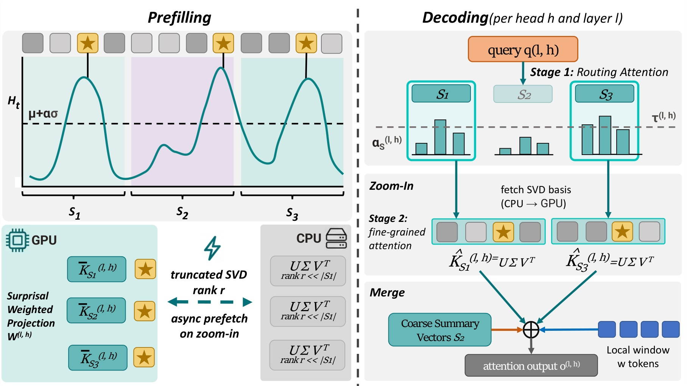
Figure 2 是整篇方法的主线。左边 prefilling 阶段先用 surprisal 曲线划分 $S_1,S_2,S_3$，把 anchor 与 summary 放在 GPU，把每个 span 的 truncated SVD basis 放到 CPU；右边 decoding 阶段先用 query 做 Stage 1 routing，超过阈值的 span 触发 zoom-in，并异步从 CPU 拉取 SVD basis，随后在 Stage 2 恢复 token-level KV 并和 local window、coarse summary 一起进入 attention。图中最容易忽略的是 merge：SeKV 不是把 zoomed span 作为单独检索结果拼回文本，而是在同一个 attention softmax 中混合 coarse entry 和 reconstructed token entries。这样做能让未展开 span 仍然参与上下文，而展开 span 获得更细粒度的注意力。
CPU 端的低秩表示来自公式 (6) 到 (8)。对 span $S$ 的 key matrix 做 truncated SVD 后，再由轻量 rank gate 决定每个 singular component 是否保留；这一步决定了“可恢复细节”的容量上限，也决定了 CPU 到 GPU 的实际传输体积：
符号解释：$R$ 是最大截断 rank，$\sigma_i$ 是 singular value，$u_i$ 和 $v_i$ 是左右奇异向量，$m_{S,i}^{(l,h)}$ 是由 rank predictor $g_\phi$ 给出的 soft gate，$\hat K_S$ 是重建后的 key matrix。value matrix 也做同样处理。这个表示不是 full-rank lossless 存储，论文明确说它保留的是 recoverable low-rank token-level structure。因此 SeKV 的风险边界也很清楚：它避免了永久 token eviction，但仍可能因为低秩近似、错误 span 边界或 CPU-GPU 带宽不足而损失细节。
2.3 Trained Zoom-In Mechanism：按 query 动态展开 span
解码时，SeKV 先把当前 query 投影到 routing space，然后和每个 span summary 计算 sigmoid relevance gate。这里的目标不是给所有 span 排一个全局名次，而是判断每个 span 是否值得从 coarse resolution 放大；论文使用公式 (5)：
符号解释：$\tilde{\alpha}^{(l,h)}_S$ 是 span $S$ 对当前 query 的相关概率，$\sigma(\cdot)$ 是 logistic function，$q^{(l,h)}$ 是投影后的 query，$\log |S|$ 是 span size prior，用来避免长 span 系统性被低估。与 softmax 不同，sigmoid gate 让每个 span 的展开决定相对独立，不要求所有 span 竞争一个总概率质量。随后公式 (9) 给出二值 zoom-in：
符号解释：$z_S$ 表示是否展开该 span，$\tau^{(l,h)}$ 是 per-head per-layer learned threshold。这个阈值粒度是论文的重点之一，因为不同 head 的职责差异很大：检索型 head 可能需要更常展开远处 span，streaming 型 head 则应主要看局部窗口。如果选中的 span 超出预算，论文按 $\tilde{\alpha}$ 从高到低保留，确保和固定预算 baseline 做公平比较。
训练时 base LLM 完全冻结，只训练 routing projection、threshold 和 rank-gate predictor。这样做降低了接入已有模型的成本，也让实验更容易把收益归因到 cache controller；总损失是公式 (10)：
符号解释：$L_{\mathrm{distill}}$ 让 SeKV 输出分布接近 full-KV teacher；$L_{\mathrm{zoom}}$ 用 teacher attention mass 生成目标 span 集合，监督 routing probability；$L_{\mathrm{recon}}$ 惩罚 SVD gated reconstruction error，训练 rank predictor；$L_{\mathrm{budget}}$ 惩罚展开 span 数和 retained rank，避免系统把所有 span 都展开。这个目标把“准确性”和“显存/传输成本”放在同一训练框架内，因而不只是后处理阈值调参。
论文的内存分析也可以压缩成一个关键公式。FullKV 的 GPU memory 随 $n$ 线性增长，而 SeKV 试图让 GPU 端只随 anchor、local window 和 span summary 增长；对应近似为公式 (17)：
符号解释：$L$ 是层数，$H_{kv}$ 是 key-value head 数，$d_h$ 是 head dimension，$a$ 是 anchor token 数，$w$ 是 local window，$b$ 是每个 scalar 的字节数，$H$ 是 routing head 数，$d'$ 是 summary 维度，$m$ 是 span 数。第一项来自 anchor 和 local window 的 full-resolution KV，第二项来自 GPU-resident span summaries。由于 $a+w \ll n$ 且 $d'\ll d_h$，GPU memory 增速显著低于 FullKV；CPU 端则承担低秩 basis 的存储和按需传输。
3. 实验结果
3.1 实验设置与评测边界
论文把实验目标拆成三个问题：长上下文任务的准确率是否保住，压缩后是否仍能恢复深处证据，系统开销是否真的低于 FullKV。评测覆盖 LongBench、RULER、InfiniteBench、NIAH 和 GSM8K many-shot。baseline 包括 FullKV、StreamingLLM、H2O、SnapKV、PyramidKV、ChunkKV、SemantiCache 和 SentenceKV。除 FullKV 作为未压缩参考外，主要压缩方法都按 10% GPU-resident KV budget 对齐，避免用更大缓存换结果。backbone 包含 LLAMA-3.2-3B-INSTRUCT、LLAMA-3-8B、LLAMA-3.1-8B-INSTRUCT、MISTRAL-7B-INSTRUCT 和 QWEN2.5-14B-INSTRUCT。
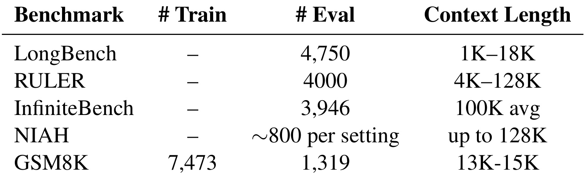
Table 4 是理解实验边界的起点。LongBench 覆盖 1K 到 18K 的自然长文档任务，RULER 可控地扩展到 128K，InfiniteBench 平均输入超过 100K，NIAH 用不同插入深度测试单个事实检索，GSM8K 则在 13K 到 15K 的 50-shot prompt 中测试 reasoning pattern 是否保留。这个组合让 SeKV 不能只在一种任务上投机：如果只会找 needle，GSM8K 会暴露问题；如果只保留局部语言流畅性，RULER/NIAH 会掉；如果只在短上下文有效，InfiniteBench 会拉开差距。表中也说明 GSM8K 的训练集没有用来训练 SeKV，因此 many-shot 结果不是 task-specific finetuning。
实现方面，SeKV 在 PyTorch 和 HuggingFace Transformers 上实现，训练数据是 RedPajama 的 arXiv、books 和 code 子集。训练只更新少量组件：per-head per-layer routing projections、zoom thresholds 和 shared rank-gate predictor，论文报告 LLAMA-3-8B 上约 4.3M 参数，约占 base model 的 0.05%。训练设置包括 $R_{max}=32$、summary dimension $d'=32$、boundary sensitivity $\alpha=1.0$、local window $w=512$。这些细节很重要，因为它说明 SeKV 不是重新训练长上下文模型，而是给 frozen backbone 加一个轻量缓存控制层。
3.2 主结果：四类长上下文任务
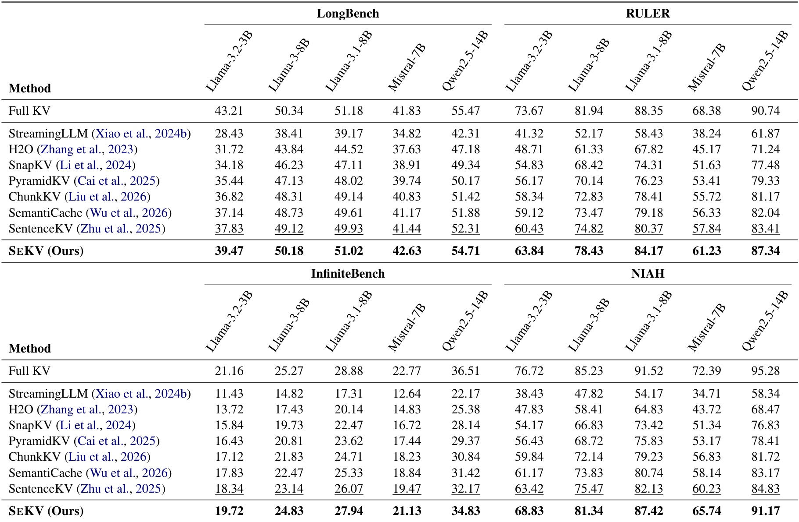
Table 1 是论文最强的结果证据。所有压缩方法都在 10% GPU-resident KV budget 下比较，SeKV 在 LongBench、RULER、InfiniteBench 和 NIAH 的五个 backbone 上全部成为最佳 compressed result，也就是 20 个 compressed setting 全胜。论文给出的平均结论是，相对最强 semantic baseline SentenceKV，SeKV 平均提升 5.9%。从表格数字看，提升最大的场景集中在 retrieval-heavy benchmark：QWEN2.5-14B 的 NIAH 上 SeKV 达到 91.17，而 SentenceKV 是 84.83；RULER 上 SeKV 是 87.34，而 SentenceKV 是 83.41。LongBench 和 InfiniteBench 的 gap 较小但仍稳定，说明它不是只针对 synthetic retrieval 设计。
这个结果也要和 FullKV 的位置一起读。SeKV 在 LongBench 和 InfiniteBench 上接近 FullKV，但在 RULER/NIAH 上仍与 FullKV 有差距，尤其 QWEN2.5-14B 的 NIAH FullKV 是 95.28，SeKV 是 91.17。换句话说，SeKV 没有宣称无损替代 FullKV；它给出的 trade-off 是在 10% GPU-resident budget 下尽量接近 FullKV，并显著超过 irreversible token eviction 和固定 semantic compression。对工程部署来说，这个结论比“绝对最高分”更有用，因为线上长上下文服务往往必须先满足显存预算，再在预算内争取准确率。
3.3 检索稳定性与 many-shot reasoning
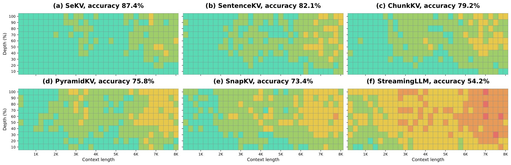
Figure 3 把 Table 1 中 NIAH 的平均数拆成 context length 与 needle depth 的二维表现。SeKV 的六个子图中左上到右下都保持较大面积的绿色，说明在 1K 到 8K、不同插入深度下都较稳定；SentenceKV 和 ChunkKV 仍有不少绿色区域，但在长 context 和深层插入时更容易出现黄色；StreamingLLM 则因为保留策略更激进，失败区域明显扩大。这个图支撑了 SeKV 的核心机制：远处证据如果被当成低分辨率 span 存在，后续 query 相关时仍可 zoom-in；如果早期直接 eviction，就没有恢复路径。注意这里的 cache size 固定为 128，因此图展示的是同等小缓存下的空间稳定性，而不是单纯增加缓存容量。
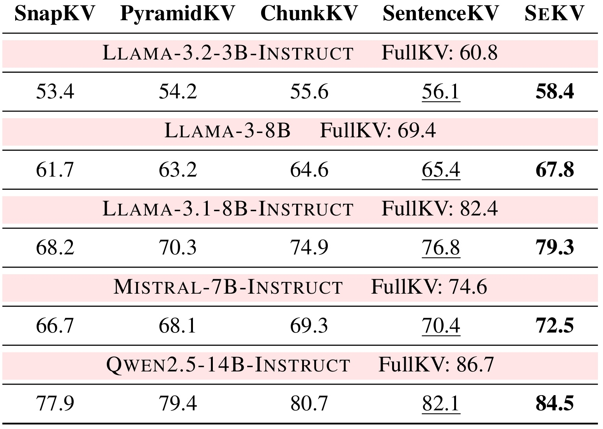
Table 2 说明 SeKV 不只是在 needle retrieval 上有效。50-shot GSM8K 要求模型保留许多示例中的推理模式，而不是检索单个隐藏事实。表中 SeKV 在五个 backbone 上都是最佳 compressed method，例如 LLAMA-3.1-8B-INSTRUCT 上 SEKV 为 79.3，SentenceKV 为 76.8，FullKV 为 82.4；QWEN2.5-14B-INSTRUCT 上 SEKV 为 84.5，SentenceKV 为 82.1，FullKV 为 86.7。这个差距说明低分辨率语义记忆并没有把 long prompt 中的 demonstration structure 完全抹平。它也提醒读者，KV cache 压缩不能只看问答式检索，还要看示例序列、推理轨迹和模式归纳是否被破坏。
3.4 效率、内存与行为证据
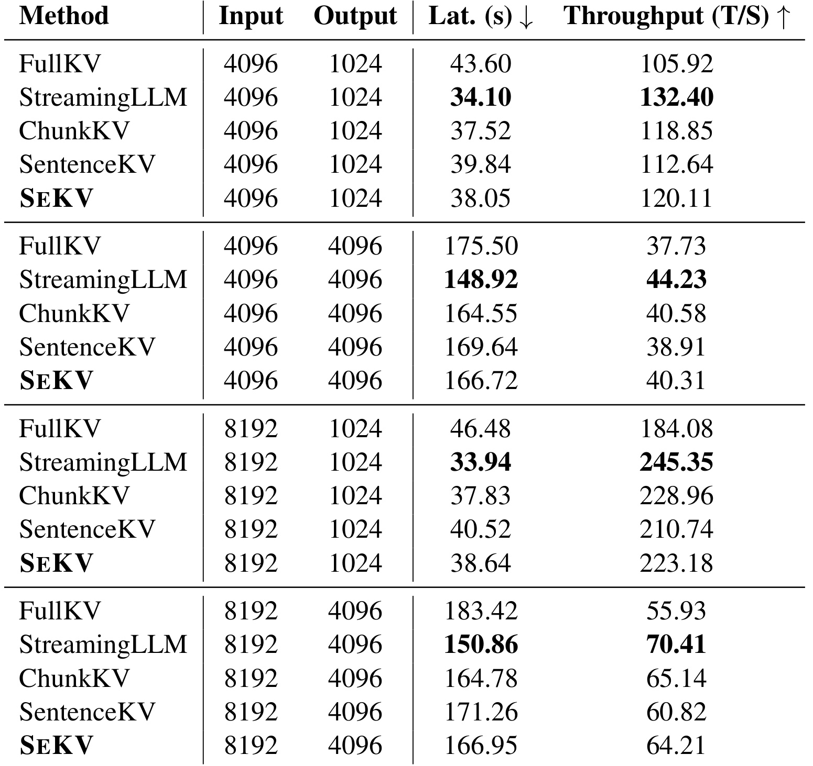
Table 3 给出 batch size 1 下的 runtime 对比。SeKV 在 4K/1K 设置中 latency 38.05 秒、throughput 120.11 T/S，比 FullKV 的 43.60 秒和 105.92 T/S 更好；在 8K/4K 设置中，SeKV latency 166.95 秒、throughput 64.21 T/S，也优于 FullKV 的 183.42 秒和 55.93 T/S。StreamingLLM 通常最快，因为它大量丢弃 token，但 Table 1 显示准确率损失也最大。SeKV 的定位更像是在 SentenceKV/ChunkKV 附近取得系统成本，同时通过 dynamic reconstruction 换取更高准确率。工程上应把它视为 accuracy-memory-latency 三者的折中，而不是单纯 latency 最优方法。
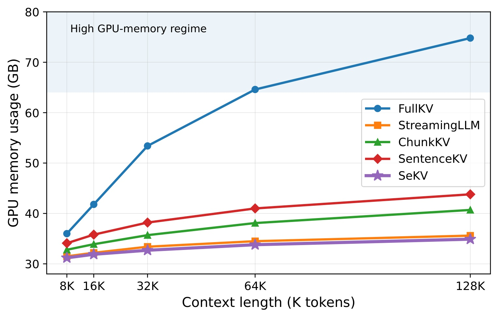
Figure 4 是系统价值最直观的图。FullKV 随 context length 从 8K 到 128K 明显上升，128K 附近接近高显存区；SeKV 曲线则几乎平坦，论文正文写到在 QWEN2.5-14B-INSTRUCT 上从 31.2GB 增至 34.9GB，而 FullKV 从 36.0GB 增至 74.8GB。这个图和公式 (17) 对应：SeKV 的 GPU 端主要存 anchor、local window 和 summary，而不是所有 token 的 full KV。需要注意的是，内存从 GPU 转移到 CPU 后并不是免费午餐，后续 latency 取决于异步 prefetch 是否能覆盖传输开销，以及 query 是否频繁激活大量远处 span。因此这张曲线证明的是 GPU resident cache 压力被压住，不等于整体系统成本完全消失。
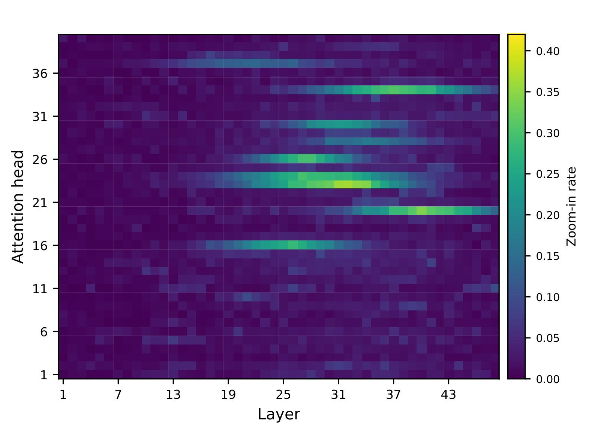
Figure 5 展示 QWEN2.5-14B-INSTRUCT 在 NIAH 上的 layer/head zoom-in rate。热力图里大部分区域接近暗色，少数中后层 head 更亮，说明 SeKV 并没有把许多 span 一起展开，而是让少数更像 retrieval head 的位置承担恢复 token-level detail 的任务。这一点直接支持 per-head per-layer threshold 的设计：如果用单一全局阈值，局部流式 head 可能被迫过度展开，检索 head 又可能展开不足。该图还帮助解释为什么 Table 3 的系统开销没有爆炸，因为重建和传输只发生在稀疏 head/span 上。对工程排查来说，这类 heatmap 还能作为 router 是否退化成“全展开”或“全不展开”的诊断信号。
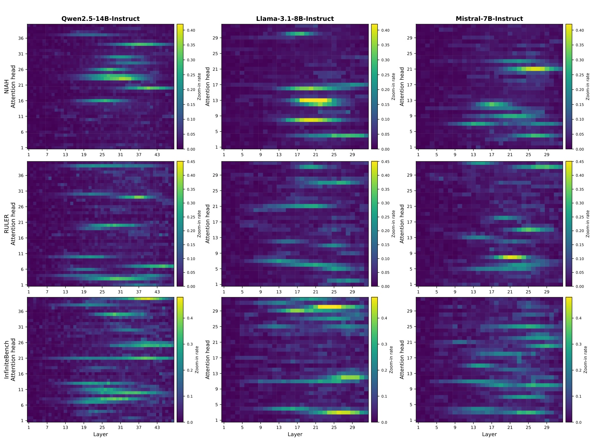
Figure 6 把 Figure 5 的行为分析扩展到 QWEN2.5-14B、LLAMA-3.1-8B 和 MISTRAL-7B，并覆盖 NIAH、RULER、InfiniteBench。三行三列的模式并不完全一样：NIAH 更像尖锐的事实检索，RULER 的激活更分散，InfiniteBench 因输入更长且异质性更强，部分模型上会出现更宽的亮带。但共同点是大多数 head 仍然保持低 zoom-in rate，活跃区域集中在部分中后层。这个跨模型证据让方法解释更可信：SeKV 学到的不是某个模型某个任务的固定 mask，而是与长距离证据恢复相关的 head/layer 分工。它也解释了为什么论文消融里 fixed global threshold 会掉分，因为不同模型和任务的亮区位置并不一致。
3.5 消融与超参数敏感性
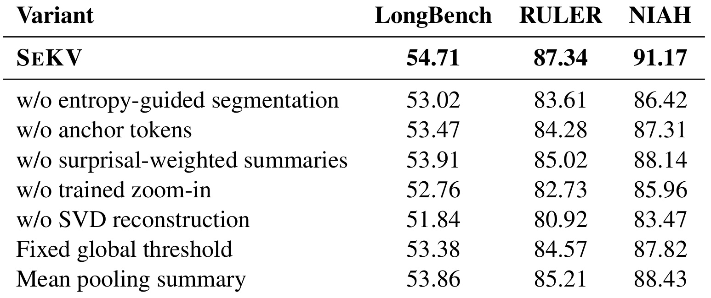
Table 5 回答“哪些模块真正重要”。在 QWEN2.5-14B-INSTRUCT、10% KV budget 下，完整 SeKV 的 LongBench/RULER/NIAH 是 54.71/87.34/91.17。去掉 SVD reconstruction 后降到 51.84/80.92/83.47，是最大损失；去掉 trained zoom-in 后为 52.76/82.73/85.96，也明显下降。相比之下，去掉 anchor tokens、surprisal-weighted summaries 或换成 fixed global threshold 的损失较小但稳定。这个排序说明 span summary 本身不够，真正的增益来自“相关时能恢复 token-level detail”以及“知道何时恢复”。如果只有静态 semantic summary，SeKV 会退化成另一种 fixed semantic cache。
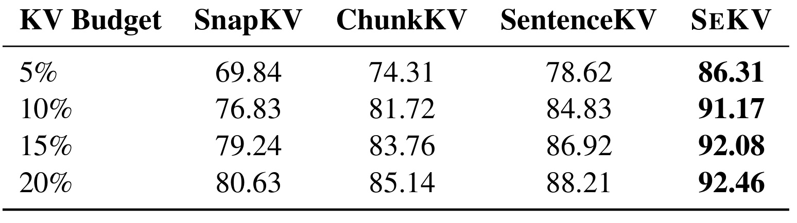
Table 6 说明 SeKV 在 tight memory budget 下尤其有价值。5% KV budget 时，SEKV 的 NIAH accuracy 是 86.31，SentenceKV 是 78.62，ChunkKV 是 74.31，优势最大；预算提升到 10% 后 SEKV 达到 91.17，再往 15% 和 20% 提升到 92.08 与 92.46，增益开始变小。这说明 SeKV 最能解决的是低预算下“哪些 span 必须恢复细节”的问题。当预算足够大，其他方法也能保留更多 token 或 semantic unit，边际差距自然收窄。部署上，这张表可以用来选择 operating point：如果目标是显著压缩 GPU KV，5%-10% 区间可能最值得尝试。
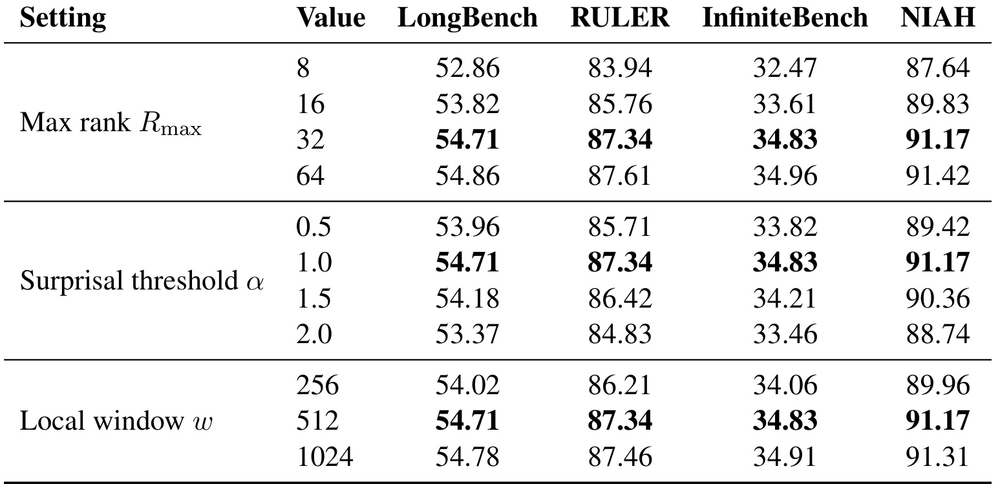
Table 7 给出复现和迁移时最需要看的超参数。最大 rank 从 8 提到 32 时，四个 benchmark 都有明显改善，说明某些 span 的 token-level structure 需要足够低秩容量；从 32 到 64 收益很小，表明默认 $R_{max}=32$ 已经接近饱和。surprisal threshold $\alpha=1.0$ 最稳，0.5 会切出过多短 span、2.0 又可能 span 过粗。local window 从 256 到 512 有收益，1024 只带来很小提升。这个结果支撑论文默认配置，但也提示迁移风险：代码、表格、日志这类格式化文本可能导致 surprisal boundary 不稳定，最好重新验证 $\alpha$ 和 local window。
4. 总结
4.1 我的判断
SeKV 的贡献可以概括为把 KV cache 从“保留/丢弃”的二元问题改成“多分辨率、可按 query 放大”的 memory hierarchy。它不是第一篇把语义结构引入 KV cache 的论文，但它把 entropy-guided span、GPU routing summary、CPU low-rank basis、trained zoom-in 和 budget-aware objective 组合成了比较完整的系统。最有价值的地方是它没有回避服务约束：GPU memory、CPU-GPU transfer、latency、throughput、budget cap 都进入论文叙事，而不是只报告任务准确率。
我会把这篇论文放在 long-context serving、agent memory 和 RAG system 的交叉位置阅读。对推荐系统来说，它提示长期用户行为和内容证据不一定要永久高分辨率驻留在 GPU/online feature store 中，可以用 coarse summary 做路由、用低成本存储保留可恢复细节，再在 query 或 session 目标明确时展开。对 LLM 推理系统来说，它提供了一种比 token eviction 更温和的压缩思路：不承诺 lossless，却尽量避免不可逆删除。
更细一点看，SeKV 最值得借鉴的是“粗粒度常驻、细粒度按需恢复”的分层思想，而不是某一个具体公式。在线系统里很多记忆对象都有类似形态：用户长期画像、历史会话、商品说明、文档段落、工具调用轨迹都可能长期低频存在，但在某次请求里突然成为关键证据。如果这些对象只用固定摘要表示，召回后很难解释细节；如果全部高精度常驻，成本又不可接受。SeKV 给出的折中是先用低维 summary 判断相关性，再把真正相关的对象恢复到可参与注意力的细粒度状态。这个思路可以迁移到向量检索后的重读、长期用户行为的局部展开、以及 agent 记忆库中的证据回放，但前提是系统必须能记录可恢复的细节，而不是只保存不可逆摘要。后续若要上线，也应把恢复失败样例单独记录下来，便于持续校准复查。
4.2 局限、复现风险与后续跟进
局限至少有四点。第一，entropy-guided span segmentation 依赖 surprisal 是否真能标出语义边界；在代码、表格、日志或多语言混排里，surprisal 高点可能对应格式噪声而非语义转换。第二，低秩 SVD basis 只保留近似结构，不是 full KV 的无损外存；当答案依赖高频细节或多个分散 token 的组合时，rank gate 可能给得不够。第三，CPU-GPU 异步传输能否被计算覆盖取决于硬件带宽和 query pattern；如果用户查询连续激活大量远处 span，latency 优势会下降。第四，训练虽然只更新少量参数，但仍需要 full-KV teacher attention 和约 0.5B token 的 long-document training，迁移到新 backbone、量化模型或不同 serving runtime 时不是完全零成本。
后续跟进我建议看三条线。第一，等作者仓库可访问后检查 SVD basis 的实际存储格式、prefetch queue、budget cap 实现和与 HuggingFace cache API 的结合方式，因为这些决定工程可复现性。第二，用真实 RAG/agent traces 测试 span boundary：论文用 RedPajama 和标准 benchmark，线上系统的 tool logs、HTML、表格和用户行为序列可能有不同的 entropy profile。第三，对比同日或近期的 hierarchical memory、sparse attention serving 与 retrieval-based KV offloading 方法，重点看它们是否也能避免 irreversible eviction，以及是否需要训练额外 router。若要在推荐长序列或个性化记忆中迁移，还需要额外验证隐私、冷启动、增量更新和跨 session cache 失效策略。